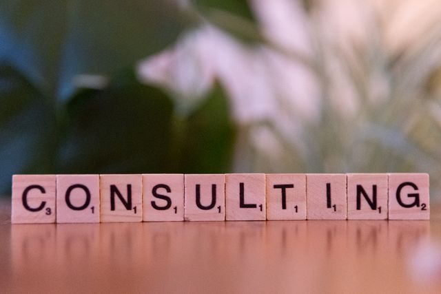

Diagnóstico Ambiental
Diagnóstico ambiental inicial y evaluación de impacto para organizaciones de diversos rubros.

¡Hola! Soy Mariana López, especialista en gestión ambiental y sostenibilidad corporativa. Mi misión es acompañar a las empresas hacia un desarrollo sustentable.
Diagnóstico ambiental inicial y evaluación de impacto para organizaciones de diversos rubros.
Asesoramiento integral para la implementación y certificación de la Norma ISO 14001.
Diseño e implementación de estrategias efectivas para la reducción de la huella de carbono.
Capacitaciones in-company sobre economía circular, gestión de residuos y buenas prácticas ambientales.
Soy Licenciada en Ciencias Ambientales y cuento con un Máster en Economía Circular. Durante los últimos años he trabajado junto a distintas industrias impulsando el cambio sostenible.